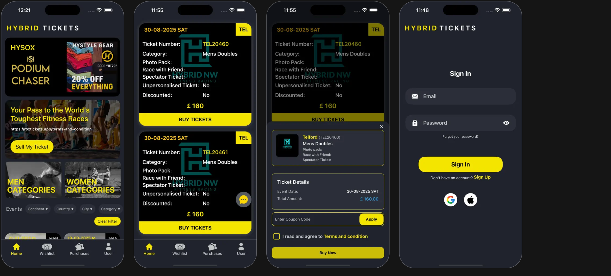
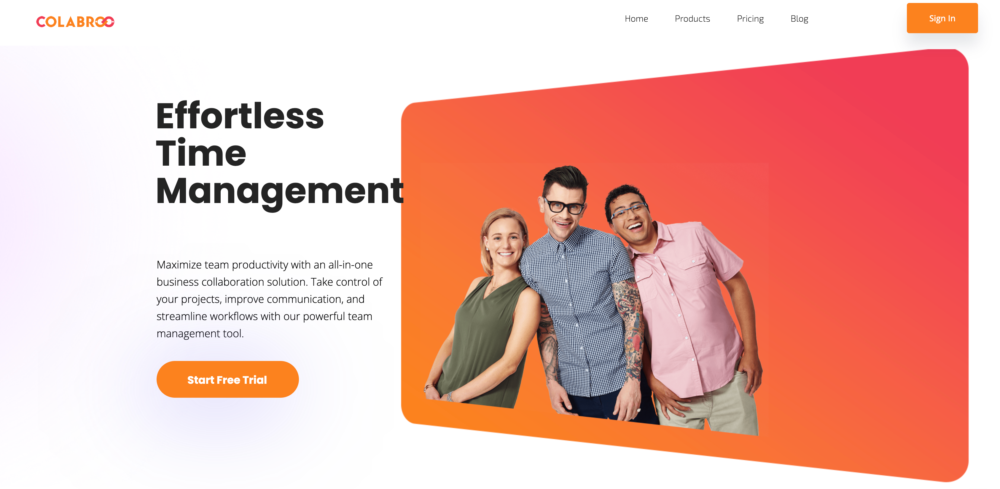
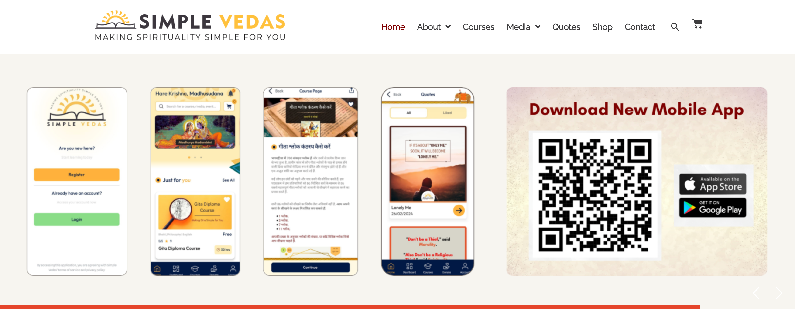
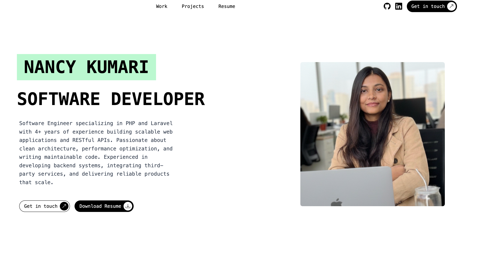

PHP/Laravel backend developer with 4 years building APIs & scalable web applications

Built a Laravel-based ticketing system with Stripe payment integration and secure webhook processing. Designed scalable backend APIs and database architecture for event and user management.

Developed backend modules for workforce scheduling and reporting. Built REST APIs and optimized database queries for scalable enterprise workflow management.

A platform that brings ancient Vedic wisdom to modern users, featuring teachings from the Gita, Ramayana, Mahabharata, Puranas, and Upanishads, along with practices like mindfulness, yoga, and Vedic chanting.

A personal portfolio showcasing my backend and full-stack development projects, APIs, and technical expertise built with modern web technologies.